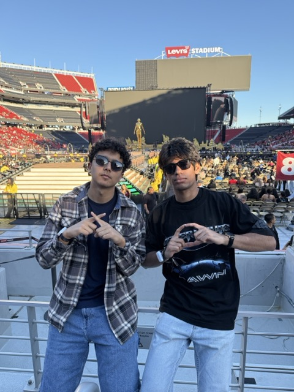
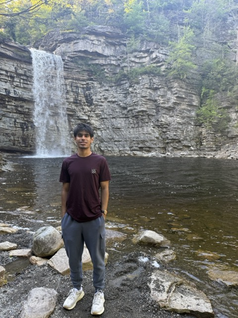
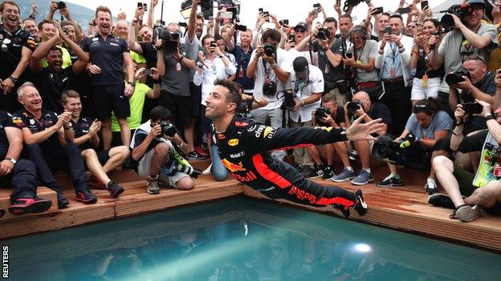

Hi! My name is Hridaanshu, or Anshu for short. I'm an Electrical Engineering student at UIUC, passionate about autonomous systems, avionics, computer vision and machine learning. I love making things, and if you ever have a project idea, I'm down! I am also passionate in computer science, and am pursuing a minor in CS.
I absolutely love capturing nature's beauty through my lens. You'll never catch me outside without my trusty Nikon camera! Exploring new places and documenting them is one of my greatest joys. I have been to almost all the US National Parks, and many countries.
Music is a huge part of my life. Here are some of my favorite albums:

Weeknd After Hours Til' Dawn ConcertI'm from Upstate New York, where I grew up surrounded by forests, lakes, and mountains. Hiking with my family every summer weekend is a tradition that I cherish deeply, and it's given me a deep appreciation for the outdoors. I appreciate the beauty of nature, and all the life inside it!

Lake Minnewaska, NYI've become absolutely addicted to the gym over the past couple of years. Through consistent training and dedication, I've gained 20 pounds in two years and have completely transformed my body. Fitness has become a huge part of my life, and I'm proud of the progress I've made!
I love watching Formula One, and my favorite drivers are Lewis Hamilton and Daniel Ricciardo. Race weekends are always great.

Daniel Ricciardo